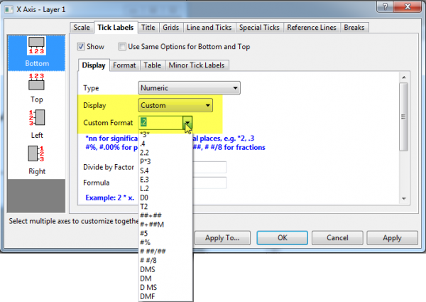

FAQ-123 Wie zeige ich meine Achsenbeschriftung als Prozentangabe oder Bruch oder Längen-/Breitengrad an?
Display-Percentage-Axis-Label
Letztes Update: 11.12.2018
Manchmal, wenn Sie ein Diagramm zeichnen und Folgendes anzeigen möchten:
- die dezimalen Hilfsstrichsbeschriftungen als Prozentangabe, wie 10 %,
- die numerischen Hilfsstrichsbeschriftungen als Bruch, wie 3/8,
- die Längen-/Breitengrad-Hilfsstrichsbeschriftungen als Grad-Minute-Sekunde, wie 37° 20' 33".
Dann können Sie das Kombinationsfeld der Hilfsstrichsbeschriftungen Benutzerdefiniertes Anzeigeformat für die Achsen verwenden, um Ihre benutzerdefinierten Anzeigeformate mit Origin-Formatnotationen zu definieren.
- 
- klicken Sie doppelt auf die Hilfsstrichsbeschriftung, um den Dialog Achsen zu öffnen.
- Gehen Sie zur Registerkarte Beschriftungen der Hilfsstriche und dann zur Registerkarte Anzeige.
Fall 1: Beschriftung mit Prozentangabe anzeigen
Ab Origin 2018b unterstützen Arbeitsblätter die Anzeige von Dezimalzahlen als Prozentangaben, z. B. 10 %, 20 % etc. Nachdem das Diagramm jedoch gezeichnet wurde, werden die Beschriftungen der Achsenhilfsstriche noch als Dezimalzahlen angezeigt, z. B. 0,1, 0,2. Um die Hilfsstrichsbeschriftungen als Prozentangaben zu zeigen, können Sie bei geöffneter Registerkarte Anzeige (siehe oben)
- die Option Benutzerdefiniert in der Auswahlliste Anzeige auswählen.
- Wählen Sie in der Auswahlliste #% im Textfeld Benutzerdefiniertes Format oder geben Sie es ein.
- Klicken Sie auf OK.
 | In Origin 2018 und älteren Versionen, die das Prozentformat nicht unterstützen, können Sie folgende Schritte befolgen, um die Hilfsstrichsbeschriftungen als Prozentangaben anzuzeigen:
- Klicken Sie doppelt auf die Hilfsstrichsbeschriftung, um den Dialog Achsen zu öffnen.
- Gehen Sie zur Registerkarte Beschriftungen der Hilfsstriche und dann zur Registerkarte Anzeige.
- Geben Sie 1/100 oder 0,01 im Textfeld Teilungsfaktor ein.
- Geben Sie % in dem Textfeld Suffix ein.
- Klicken Sie auf OK.
|
Fall 2: Beschriftung mit Bruchangabe anzeigen
Ab Origin 2018b unterstützt Origin die numerische Hilfsstrichsbeschriftung als Bruchangabe. Über die geöffnete Registerkarte Anzeige (siehe oben) können Sie
- die Option Benutzerdefiniert in der Auswahlliste Anzeige auswählen.
- Wählen Sie # ##/## oder # #/8 in der Auswahlliste oder geben Sie Ihre eigene benutzerdefinierte Formatnotation im Textfeld Benutzerdefiniertes Format ein.
- Klicken Sie auf OK.
Fall 3: Beschriftung mit Längen-/Breitengrad anzeigen
Ab Origin 2018b unterstützt Origin die Beschriftung der Hilfsstriche mit Längen-/Breitengrad als Grad-Minute-Sekunde. Mit der oben geöffneten Registerkarte Anzeige können Sie
- die Option Benutzerdefiniert in der Auswahlliste Anzeige auswählen.
- Wählen Sie eine native Notation wie DMS in der Auswahlliste oder geben Sie Ihre eigene benutzerdefinierte Formatnotation im Textfeld Benutzerdefiniertes Format ein.
- Klicken Sie auf OK.
Schlüsselwörter:%, Achse, Zeichnung, Beschriftung, Skalierung, Suffix, Präfix, Bruch, Längengrad und Breitengrad, Grad, Minute und Sekunde, DMS, DD-MM-SS
Origin-Version mind. erforderlich: 2018b